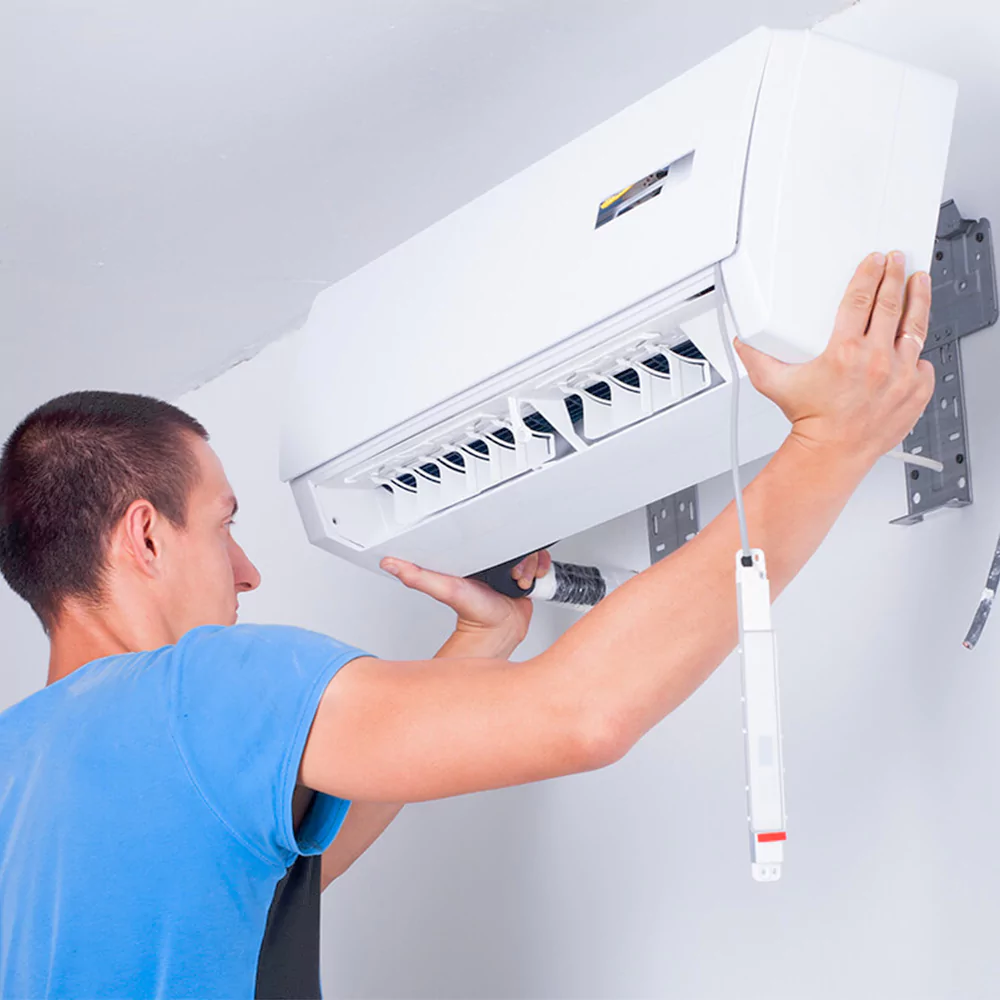

صيانة مكيفات 24 ساعة الرياض

في مدينة الرياض ذات الأجواء الحارة، امتلاك مكيف ليس بالرفاهية بل إنه من الضروريات التي لا يُمكن الاستغناء عنه، نظرًا لأنه يتم تشغيل المكيف طوال اليوم، فإنه يصبح عرضة للإصابة بـ الأعطال المفاجئة، لذلك فإنه يجب عليك الاستعانة بشركة تقدم خدمة صيانة مكيفات 24 ساعة تستجيب لطلبك في جميع الأوقات، ومن هذه الشركات شركة نقل الرياض ذات الخبرة الكبيرة في مجال صيانة المكيفات، تمتلك الشركة فنيين متخصصين في صيانة جميع أنواع المكيفات باستخدام أحدث الأدوات، لذلك إذا كنت تعاني من الأعطال المفاجئة تواصل مع شركة نقل الرياض بالضغط على ايقونة الواتس اب.
أهمية توفر خدمات صيانة مكيفات 24 ساعة الرياض
في الأجواء الحارة لمدينة الرياض تعمل المكيفات طوال اليوم لتلطيف حرارة الجو، لذلك فإنها تحتاج إلى صيانة دورية وتنظيف بشكل مستمر لتفادي الأعطال المفاجئة وضمان عملها بكفاءة عالية طوال فصل الصيف، ومن أجل ذلك وفرت شركة نقل الرياض خدمة صيانة مكيفات 24 ساعة الرياض، إليك أهمية هذه الخدمة:
- خدمة صيانة مكيفات 24 ساعة الرياض تساعد على التعامل الفوري مع الأعطال المفاجئة للمكيفات دون الحاجة للانتظار حتى ساعات العمل الرسمية.
- في الرياض يُعد تكييف الهواء من الضروريات، لذلك أي تأخير في إصلاحه يؤدي إلى إزعاج السكان، لذلك وفرت شركة نقل الرياض صيانة مكيفات 24 ساعة الرياض لضمان راحة السكان.
- تعتمد كافة المطاعم والمتاجر والشركات بشكل كبير على أجهزة المكيفات وذلك لتوفير بيئة عمل مناسبة للعملاء والموظفين، تعطل المكيف في منتصف الليل قد يسبب خسائر مادية، لذلك تعد خدمة صيانة مكيفات 24 ساعة الرياض من شركة نقل الرياض هي المنقذة في ذلك الوقت.
- قد يؤدي التأخير في صيانة المكيف إلى تفاقم المشكلة وارتفاع تكلفة الصيانة، لذلك التدخل الفوري من شركة نقل الرياض التي تتيح خدمة صيانة مكيفات 24 ساعة الرياض يبقي الأمور مستقرة ويحد من تفاقم الأعطال.
افضل شركة فك وتركيب مكيفات بالرياض بسعر منافس 0559865517
أفضل شركات صيانة مكيفات 24 ساعة الرياض
يبحث الكثير من سكان مدينة الرياض عن أفضل شركة تقدم خدمة صيانة مكيفات 24 ساعة الرياض، يُمكن الإشارة إلى شركة نقل الرياض ذات خبرة طويلة في مجال صيانة جميع أنواع الكيفات سواء مكيفات سبلت، أو شبك، أو المكيفات المركزية، تستخدم شركة نقل الرياض أحد أدوات الصيانة، قطع غيار أصلية، كم أن الشركة لديها خبراء وفنيين في مجال صيانة المكيفات مما يضمن لك الحصول على أجود خدمة صيانة لمكيفك، كما أنها لديها ضمان على الخدمة، خدمة عملاء يضمنون لك الاستجابة السريعة إذا كنت تعاني من أي أعطال مفاجئة، لذلك إذا كنت تريد خدمة صيانة لمكيفك تدوم لأطول فترة ممكنة فإنه عليك الاستعانة بشركة نقل الرياض التي تقدم خدمة صيانة مكيفات بالرياض، يُمكنك التواصل معها من خلال الضغط على ايقونة الواتس اب.
مزايا الاستعانة بخدمة صيانة مكيفات 24 ساعة الرياض
الاستعانة بخدمة صيانة مكيفات 24 ساعة الرياض هو من أفضل القرارات، وذلك في ظل ارتفاع الحرارة في مدينة الرياض وزيادة استهلاك المكيف كل يوم يؤدي إلى أعطال طارئة، ولكن عند الاستعانة بخدمة صيانة مكيفات 24 ساعة ستجد استجابة سريعة من شركة نقل الرياض وذلك بأن الشركة تعتمد على فنيين محترفين يتعاملون من الأعطال بسرعة وكفاءة عالية مما يمنع تفاقم المشكلة، كما أن توفير الخدمة طوال الوقت تقلل من توتر العميل وتعيد للمنزل الراحة، قد يؤدي تعطيل المكيف إلى خسائر كبيرة مثل المطاعم والمتاجر، لذلك عند الاستعانة بخدمة صيانة مكيفات 24 ساعة الرياض يضمن استمرار هذه الأماكن في العمل، أيضًا كلما تأخرت في طلب خدمة الصيانة كلما زادت المشاكل والأعطال المفاجئة، يُمكنك طلب هذه الخدمة في أي وقت من شركة نقل الرياض وسوف تتولى الشركة بالتحرك الفوري لصيانة مكيفك، للتواصل اضغط على ايقونة الواتس اب.
تنظيف مكيفات حي السويدي الرياض 0559865517 بأفضل الأسعار
الأعطال الطارئة التي تتطلب صيانة مكيفات 24 ساعة الرياض
هناك أعطال تحدث فجأة تستدعي تدخل سريع لتجنب تفاقم الأعطال، لذلك يجب توفر خدمة صيانة 24 ساعة الرياض لحل هذه المشكلة، ومن هذه الأعطال:
- خروج هواء ساخن بدلًا من الهواء البارد مما يدل على حدوث خلل في دورة التبريد، أو تسرب في غاز الفريون.
- تلف في الدوائر الكهربائية مما يؤدي إلى توقف المكيف عن العمل، وفي هذه الحالة يجب فورًا طلب شركة صيانة مكيفات محترفة مثل شركة نقل الرياض.
- إنسداد مجرى تصريف المياه مما يؤدي إلى تسرب المياه من المكيف.
- خروج روائح كريهة من المكيف أو دخان مما يدل على تراكم البكتيريا والأتربة داخل المكيف، احتراف أحد الأسلاك.
- صدور أصوات عالية من المكيف بشكل غير الطبيعي يدل على وجود مشكلة داخلية مثل تلف المروحة.
- انخفاض كفاءة التبريد مما يشير إلى وجود خلل في غاز الفريون أو ملفات التبريد.
- حدوث مشكلة في لوحة التحكم للمكيف مما يؤدي إلى تعطل التحكم الكلي في المكيف.
كيف تختار فني صيانة مكيفات 24 ساعة الرياض موثوق؟
عند اختيار فني صيانة مكيفات 24 ساعة الرياض فإنه عليك اختيار فني لديه خبرة عالية في صيانة المكيفات للحفاظ على مكيفك لأطول فترة ممكنة، إليك أفضل النصائح لاختيار فني موثوق:
- مشاهدة تقييمات وتوصيات العملاء السابقين على جودة الخدمات التي يقدمها فني صيانة مكيفات 24 ساعة الرياض.
- اختيار الفني ذات عدد سنوات خبرة كبيرة في صيانة جميع أنواع المكيفات.
- يجب أن يكون الفني لديه سرعة في الاستجابة، أن يكون جاهزًا للتنقل، لدية سيارة مجهزة بفطع الغيار والأدوات الأساسية للصيانة.
- الالتزام بالمواعيد، يبلغك أسباب العطل حتى تفاديه في المرة القادمة، يعطيك تقديرًا لتكلفة الخدمة والوقت الذي يستغرقه في الصيانة.
- اختر فني يقدم لك جودة عالية مقابل سعر مناسب، لا تختار الأسعار المنخفضة لأنها قد تدل على مشكلة في الفني.
افضل شركة تنظيف مكيفات بحي حطين 0559865517
أسعار صيانة مكيفات 24 ساعة الرياض حسب نوع الخدمة
تختلف أسعار صيانة المكيفات حسب نوع الخدمة، نوع المكيف سواء مكيف سبلت أو شباك أو المكيفات المركزية، قد تختلف الأسعار باختلاف الشركات أيضًا، المسافة، هل الخدمة بالليل أو بالنهار، هناك بعض الشركات التي تقدم خصومات للعملاء المميزين، للعائلات، يُمكنك معرفة المعلومات الدقيقة حول أسعار صيانة مكيفات 24 ساعة الرياض، من خلال الاستعانة بأفضل شركة صيانة مكيفات “شركة نقل الرياض”، تقدم الشركة جميع أنواع خدمات الصيانة بأعلى جودة وأفضل الأسعار، كما تضم الشركة أفضل الفنيين المحترفين ذوي الخبرة في هذا المجال، للتواصل مع الشركة اضغط على ايقونة الواتس اب.
مناطق تغطية خدمة صيانة مكيفات 24 ساعة الرياض
شركة نقل الرياض تقدم خدمة صيانة مكيفات 24 ساعة الرياض تغطي جميع مناطق وأحياء الرياض، سواء في شرق الرياض، وشمال الرياض، غرب الرياض، جنوب الرياض، إليك أبرز هذه المناطق:
- حي حطين
- حي الياسمين
- حي النرجس
- حي الروضة
- حي الخليج
- حي اليرموك
- حي النهضة
- حي الرمال
- حي الحمراء
- حي اليرموك
- حي السويدي
- حي العريجاء
- حي ديراب
- حي البديعة
- حي الشفاء
- حي بدر
- حي أحد
- حي المروة
- حي الدار البيضاء
- حي الضباط
- حي السليمانية
- حي المربع
تغطي شركة نقل الرياض كل هذه الأحياء وأكثر، لذلك إذا كنت تعاني من الأعطال المفاجئة لمكيفك، تواصل مع شركة نقل الرياض ذات الخبرة الواسعة في مجال صيانة المكيفات، اضمن أداء تبريد مكيفك لأطول فترة ممكنة، للتواصل مع الشركة اضغط على ايقونة الواتس اب.
افضل شركة تنظيف مكيفات بالرياض 0559865517 وبالمملكة العربيه السعودية
هل صيانة مكيفات 24 ساعة الرياض تشمل جميع أنواع المكيفات؟
نعم، خدمة صيانة مكيفات 24 ساعة الرياض تشمل جميع أنواع المكيفات، عندالاختيار اختر شركة ذات تقيمات عالية من العملاء السابقين وتضم فنيين متخصصين، لضمان الحصول على جودة صيانة عالية، ضمان أداء مكيفك لأطول فترة ممكنة، من أنواع المكيفات التي تشملها الخدمة:
- مكيفات سبلت، وهي الأكثر شيوعًا في المكاتب والمنازل، تشمل صيانتها: تنظيف الوحدة الداخلية والخارجية، تعبئة غاز الفريون، إصلاح الكومبروسر.
- المكيفات المركزية، تتطلب فني لديه خبرة في هذه المكيفات.
- مكيفات الشباك.
- مكيفات كاسيت.
- المكيفات الصحراوية.
إذ كنت تملك أي نوع من أنواع المكيفات فإنه يُمكنك الاستعانة بشركة نقل الرياض التي تقدم خدمة صيانة مكيفات 24 ساعة الرياض، للتواصل مع الشركة اضغط على ايقونة الواتس اب.
شركة تنظيف مكيفات حي ظهرة لبن | شركة صيانة مكيفات حي ظهرة لبن 0559865517
خطوات التواصل السريع مع صيانة مكيفات 24 ساعة الرياض
للتواصل السريع مع شركة تقدم خدمة صيانة مكيفات 24 ساعة الرياض “شركة نقل الرياض”، اضغط على ايقونة الواتس للتواصل، وستقوم الشركة بالتدخل الفوري والاستجابة لطلبك، أو يُمكنك الاتصال على رقم 0559865517.
الأسئلة الشائعة حول صيانة مكيفات 24 ساعة الرياض
ما هي الشركات التي تقدم خدمة صيانة مكيفات 24 ساعة الرياض؟
شركة نقل الرياض هي من أفضل الشركات التي تقدم خدمة صيانة مكيفات 24 ساعة بالرياض ، يُمكنك التواصل مع الشركة من خلال الضغط على ايقونة الواتس اب، أو التواصل على رقم 0559865517.
أفضل شركة صيانة مكيفات بالرياض؟
تعتبر شركة نقل الرياض من أفضل شركات صيانة مكيفات بالرياض نظرًا لما تتمتع به من خبرة عالية في هذا المجال بالإضافة إلى امتلاكها فنيين محترفين، وخبراء في مجال صيانة المكيفات مما يضمن لك الحصول على خدمة عالية الجودة.